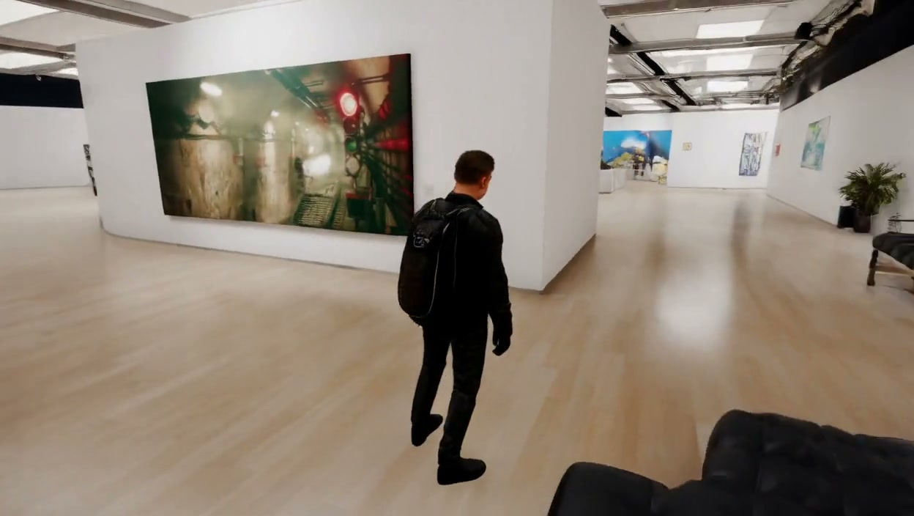
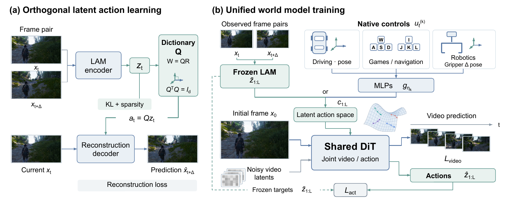

CASE 01Game → Real
AMAP, Alibaba Group · Tsinghua University
OneLA: Learning Many Worlds
from Latent Actions
A shared action space. A world of possibilities.
1 AMAP, Alibaba Group2 Tsinghua University
Different observations and controls. One shared latent action interface.
1.79Mvideo clips for LAM pretraining
32Dcontinuous latent action space
Oneshared world-model backbone
01 / The idea
Many worlds.
A common language of action.
Turning in a game, moving through a room, and controlling a robot all change what we see. Yet their native action interfaces are different, and most videos come without action labels.
OneLA learns a shared representation of visual transitions directly from video. A continuous latent action describes the change; the current observation supplies the context in which that change unfolds.
ONE SHARED INTERFACEConceptual illustration

Video frame pairs
Observed transitions across domains
Shared latent action
32 coefficients · orthogonal dictionary
Reconstruction
Predict the next frame
Current observation + transition embedding
01 / 03
Learn transition coefficients from ordered frame pairs without action labels. A shared orthonormal dictionary embeds these coefficients for next-frame reconstruction.
Read the abstract ＋
Learning world models across diverse domains calls for a unified control space, yet action interfaces vary across domains and action annotations are often scarce. Latent actions learned directly from videos offer a promising way to establish such a space without explicit action supervision. However, learning shared latent actions across domains remains challenging, as variations in appearance, embodiment, and dynamics can entangle domain-specific visual cues with transferable transition structure.
We introduce OneLA, a simple framework that learns continuous latent actions through a shared orthogonal dictionary and a common predictive objective, without task-specific designs or cross-domain alignment losses during latent action pretraining. These latent actions provide a shared conditioning interface for world models, with lightweight adapters mapping native control commands into the same space. Conditioned on latent actions and the current visual state, the world model predicts context-dependent transitions for controllable rollout.
OneLA improves action readout across domains and reduces action cycle-transfer rotation error by 24.8% over the strongest evaluated baseline. A joint-training comparison further shows a 20.5% improvement in Human Preference Score v3 for real-scene generation. These results suggest a path toward general-purpose world models that learn from diverse videos and support flexible control through latent action space.
02 / Controllable worlds
One interface.
Different ways to move.
Explore selected generated rollouts across four domains, from virtual environments to physical interactions.
GENERATED ROLLOUT 01 / 04Moving through
Moving through
virtual worlds.
Character movement and changes in viewpoint in a game environment, conditioned through the latent action interface.
Selected qualitative examples. The robotics example plays at its original 3 fps.
Cross-domain & cross-scene action transfer
Carry the motion into another scene.
The reference supplies the motion; a different initial observation supplies the scene. Explore motion transfer across real scenes, game environments, and characters.
CASE 02Game → Real
Abandoned building → billiard room
CASE 03Game → Real
Twilight city → desert trail
CASE 04Real → Game
Woodland trail → city street
CASE 05Game → Game
Frontier grassland → alien landscape
CASE 06Cross-scene character motion
Rural road → library hall
Reference and generated videos play together at 16 fps. These selected examples illustrate cross-domain and cross-scene motion transfer.
03 / Method
From visual change
to controllable prediction.
Learn the transition.
A latent action model encodes frame pairs into continuous coefficients. A learned dictionary, orthonormalized with QR, embeds them for reconstruction.
at = Qzt QᵀQ = I
Map native controls.
With the latent action model frozen, lightweight MLPs learn to map labeled, domain-specific commands into the shared latent space.
ut(k) → gk → zt
Predict video and action.
A shared Wan2.2-TI2V-5B backbone learns from inferred latent actions or mapped controls, with joint video and realized-transition action prediction.
ℒ = ℒvideo + λℒact

04 / Evidence
Shared representations.
Measurable improvements.
Results reported in the paper, with each comparison tied to its evaluation setting.
Cycle-transfer rotation error
Relative reduction versus OLaF across 40 action-transfer cycles. Rotation RPE: 0.496° → 0.373°.
Real-scene HPSv3
Training with inferred latent conditions versus zero conditions on unlabeled videos; evaluated on 30 scenes.
Human-verified collisions
A separate action-prediction-loss ablation: 18/50 cases without the loss, 11/50 with it.
Video prediction & action cycle transfer
Same OneLA backbone across benchmarks| Method | nuScenes | RT-1 | MIND | Cycle transfer | ||||
|---|---|---|---|---|---|---|---|---|
| PSNR ↑ | SSIM ↑ | PSNR ↑ | SSIM ↑ | RPEt ↓ | RPEr ↓ | RPEt ↓ | RPEr ↓ | |
| OLaF | 15.92 | 0.601 | 18.78 | 0.785 | 0.045 | 0.598 | 0.092 | 0.496 |
| AdaWorld | 10.08 | 0.208 | 17.16 | 0.743 | 0.044 | 0.601 | 0.102 | 0.535 |
| DiLA | 15.49 | 0.604 | 17.28 | 0.734 | 0.051 | 0.945 | 0.099 | 0.666 |
| OneLA ours | 16.13 | 0.625 | 17.78 | 0.771 | 0.037 | 0.553 | 0.077 | 0.373 |
Video prediction uses mapped native commands; cycle transfer uses video-derived actions. RPEr is in degrees. See Table 2 for the full metric set and the paper for the evaluation protocol.
05 / Research film
The story in motion.
An overview of the idea, the method, and selected results.
Build on this work
Citation
If you find this work useful,
please consider citing OneLA.
BIBTEX
@misc{zhu2026onela,
title = {OneLA: Learning Many Worlds from Latent Actions},
author = {Zhu, Ziyu and Sun, Zhaoxu and Jiang, Fan and
Wang, Chiyu and Ni, Junfeng and Xu, Mu},
year = {2026},
eprint = {2610.20160},
archivePrefix = {arXiv},
primaryClass = {cs.CV},
url = {https://arxiv.org/abs/2610.20160}
}